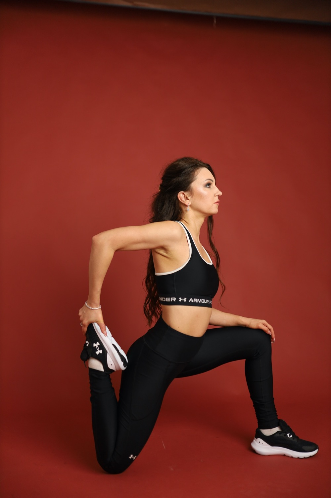
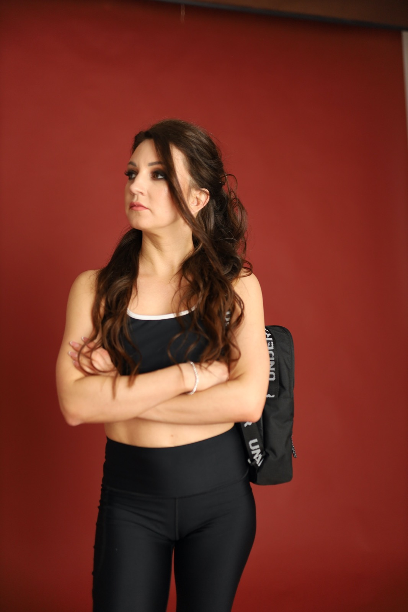

Розкриття тазостегнових
Працюємо з амплітудою, мобільністю і зонами, які найчастіше обмежують рух до шпагату.
online group / 1 місяць
Три короткі онлайн-заняття на тиждень з Катериною: mobility, розкриття тазостегнових, контроль і поступовий прогрес у шпагаті в комфортному домашньому ритмі.

why online works
Не треба їхати в зал, перевдягатися десь поза домом чи підлаштовувати вечір під дорогу. Достатньо килимка, трохи місця і 30-40 хвилин у своєму просторі.
Груповий формат додає дисципліну і відчуття, що ти не одна: всі рухаються в одному ритмі, Катя веде заняття, пояснює техніку і допомагає тримати регулярність.
Працюємо з амплітудою, мобільністю і зонами, які найчастіше обмежують рух до шпагату.
Не просто “тягнемось”, а вчимо тіло тримати положення спокійно, стабільно і без ривків.
Три вечори на тиждень створюють ритм, у якому тіло поступово адаптується і рух стає легшим.
Заняття проходять онлайн, тож вечір не розсипається на поїздки й очікування.
Можна займатись у своєму темпі, у своїх речах і в просторі, де тіло швидше розслабляється.
30-40 хвилин достатньо, щоб дати тілу якісне навантаження без перевтоми.
Група допомагає не випадати: є спільний ритм, атмосфера і підтримка.
Стартуй з групою і подивись, як тіло відкликається на регулярний stretching.
Записатисяschedule
Регулярність без марафонського тиску: тіло отримує практику і час на відновлення.
Зручний вечірній час для тих, хто живе в Чехії або поруч із цим часовим поясом.
Український час уже врахований, щоб не перераховувати розклад перед кожним заняттям.
Формат короткий, сфокусований і реалістичний навіть після робочого дня.
Катя веде групу, пояснює рухи і задає темп, щоб практика не перетворювалась на випадкові відео.
Підійде і якщо шпагат поки далеко, і якщо хочеться повернути форму після паузи.
inside classes
Кожна практика збирається навколо шпагату, але без грубого продавлювання: тіло розігрівається, включається, відкриває амплітуду і вчиться контролювати її.

coach
Її підхід не про змагання з собою. Це про красивий прогрес, довіру до тіла і практику, після якої хочеться повернутися на килимок знову.
tarif
3 рази на тиждень у вечірній групі: 19:00 за Прагою та 20:00 за Україною. Заняття тривають максимум 30-40 хвилин, щоб прогрес був регулярним і реальним для життя.